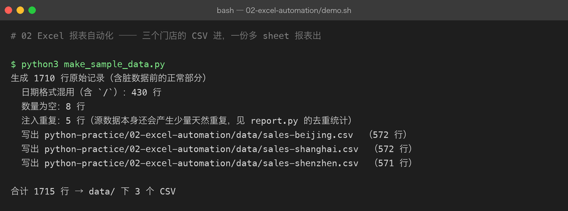
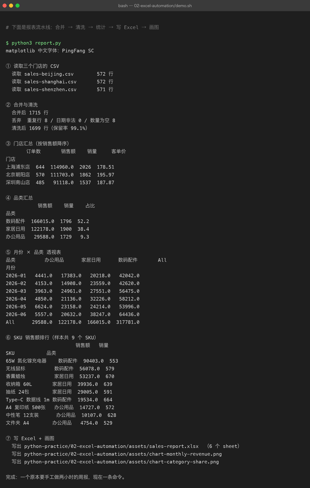
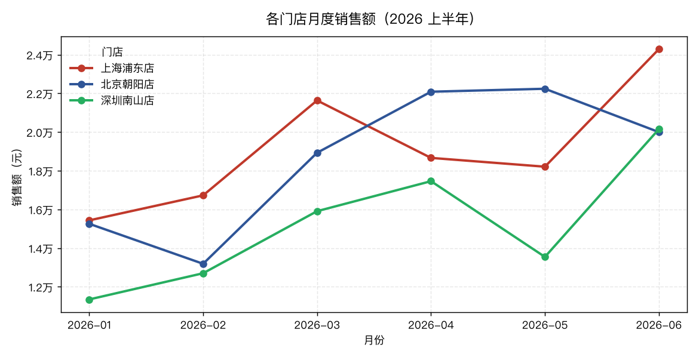
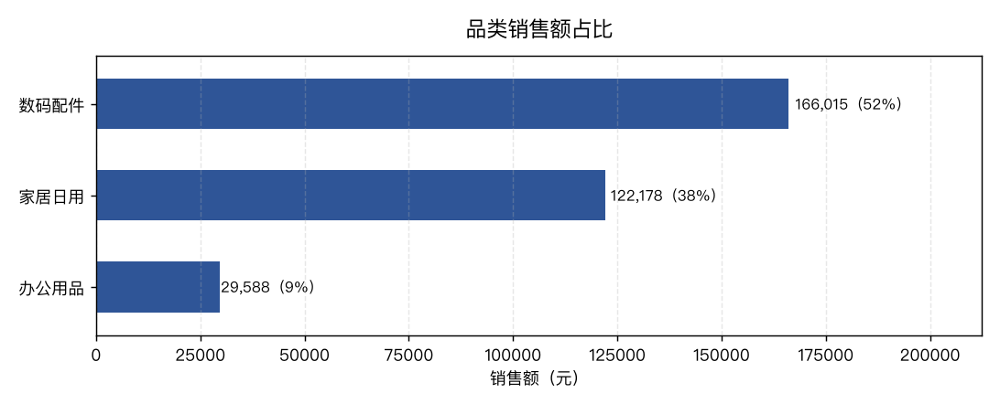

02 Excel 报表自动化
难度 ●●○ 进阶 ｜ 预计 2–3 天 ｜ 依赖 pandas、openpyxl、matplotlib 上级目录：练手项目总览
你要做的东西
三家门店各自导出一份 CSV，你要把它们变成一份可以直接发出去的多 sheet 报表：
data/sales-beijing.csv ┐
data/sales-shanghai.csv ├─→ 合并 → 清洗 → 统计 → assets/sales-report.xlsx（6 个 sheet）
data/sales-shenzhen.csv ┘ └→ 两张图（折线 + 条形）这就是「每周一手工复制粘贴两小时」这件事的标准解法。它的价值不在技术难度，而在于从此以后这个活不需要人——这才是自动化。
先看结果
第一步：造数据（顺手埋了三处真实的脏数据，见下）

第二步：报表流水线（合并 → 清洗 → 统计 → 写 Excel → 画图）

注意图里这几行，它们是这个项目真正教你的东西：
合并后 1715 行→丢弃 重复行 8 / 日期非法 0 / 数量为空 8→清洗后 1699 行（保留率 99.1%）每一步丢了多少行都必须打印出来。 报表自动化最致命的 bug 不是报错，而是「悄悄少了几百行」而没人发现。日期非法 0—— 源数据里 430 行用的是2026/01/26这种斜杠格式，靠pd.to_datetime(..., format="mixed")全部救回来了。月份 × 品类透视表最后一行/列是All，这是pivot_table(margins=True)自动加的小计。
报表本身长这样（assets/sales-report.xlsx，6 个 sheet）：
| sheet | 内容 | 行 × 列 |
|---|---|---|
清洗后明细 | 全部可用交易，销售额列带红绿色阶 | 1700 × 7 |
门店汇总 | 订单数 / 销售额 / 销量 / 客单价，按销售额降序 | 4 × 5 |
品类汇总 | 销售额 / 销量 / 占比 | 4 × 4 |
月份×品类 | 透视表（带 All 小计） | 8 × 5 |
SKU 排行 | 全部 9 个 SKU 的销售额排名 | 10 × 4 |
月份×门店 | 画折线图用的数据源 | 7 × 4 |
两张图（也都是脚本现场画出来的，不是手绘）：


你要学到的 Python / pandas
| 知识点 | 在本项目里落在哪 |
|---|---|
pd.read_csv | 读三个 CSV，注意 encoding="utf-8-sig"（带 BOM） |
pd.concat | 把三张结构相同的表纵向拼成一张 |
pd.to_datetime(..., format="mixed") | 处理混排日期格式（真实数据的头号坑） |
drop_duplicates / dropna / to_numeric(errors="coerce") | 清洗三件套 |
| 派生列 | df["revenue"] = df["qty"] * df["unit_price"]、dt.to_period("M") |
groupby().agg(命名聚合) | 一次算出订单数/销售额/销量/客单价 |
pivot_table(margins=True) | 二维透视 + 自动小计 |
ExcelWriter 多 sheet | 一个文件写 6 个表 |
| openpyxl 二次加工 | 冻结首行、表头配色、列宽自适应、数字格式、色阶 |
| matplotlib 中文字体 | 不设字体就全是「豆腐块」方框 |
| 固定随机种子 | random.Random(42) 让数据可复现 |
怎么跑起来
cd python-practice/02-excel-automation
# 装依赖（第一次）
python3 -m venv .venv && source .venv/bin/activate
pip install -r ../requirements.txt
python3 make_sample_data.py # 生成 data/*.csv
python3 report.py # 生成 assets/sales-report.xlsx 与两张图
bash demo.sh # 或者一次跑完上面两步，输出就是截图里的内容代码结构
02-excel-automation/
├── make_sample_data.py # 造数据（固定 seed=42，可复现）+ 注入三类脏数据
├── report.py # 主流程：合并→清洗→统计→写 Excel→画图
├── demo.sh # 可复现演示脚本
├── data/ # 三份样本 CSV（入库，作为证据）
├── assets/ # 报表 xlsx、两张图、终端截图、原始运行输出 run.txt
└── README.md关键代码拆解
① 为什么脏数据要「故意埋」
真实项目里，df.drop_duplicates() 这行代码你写完不知道对不对——因为真实数据可能本来就没重复。所以这里主动注入了 5 行完全重复、8 行数量为空、430 行斜杠日期：
for r in rng.sample(rows, 8):
r["qty"] = "" # 数量为空
for r in rng.sample(rows, 5):
rows.append(dict(r)) # 完全重复跑完你能对着 丢弃 重复行 8 / 数量为空 8 验证你的清洗逻辑真的生效了。能验证，才叫会了。
② 清洗顺序有讲究
df["date"] = pd.to_datetime(df["date"], format="mixed", errors="coerce") # 先转类型
df = df.dropna(subset=["date"]) # 再丢坏的
df = df.drop_duplicates() # 后去重
df["qty"] = pd.to_numeric(df["qty"], errors="coerce") # 空值变 NaN
df = df.dropna(subset=["qty"])先转类型再去重，是因为 "6" 和 6 在 pandas 眼里不是同一个值——如果先去重，类型不一致的「重复行」会漏网。这类顺序问题只有真跑过才记得住。
③ 中文字体：不做这一步，图全是方块
installed = {f.name for f in font_manager.fontManager.ttflist}
for name in ("PingFang SC", "Hiragino Sans GB", "Heiti SC", "Arial Unicode MS"):
if name in installed:
plt.rcParams["font.sans-serif"] = [name]
plt.rcParams["axes.unicode_minus"] = False # 负号别变方块
breakaxes.unicode_minus = False 这一行最容易被忽略：字体设对了中文能显示，但坐标轴上的负号仍然会是方块——因为它用的是另一套数学符号字形。
④ 列宽要用「显示宽度」而不是「字符数」
def disp_width(text: str) -> int:
return sum(2 if unicodedata.east_asian_width(ch) in "WF" else 1 for ch in text)len("门店") 是 2，但在 Excel 里它占 4 格宽。直接用 len() 算列宽，中英混排的表就会挤成一团。
⑤ pandas 管数据，openpyxl 管颜面
pandas 的 to_excel 只能写内容，写不了颜色/列宽/冻结窗格。所以流程是「pandas 写完 → openpyxl 打开再加工」：
with pd.ExcelWriter(XLSX, engine="openpyxl") as writer:
...
wb = load_workbook(XLSX) # 重新打开
ws.freeze_panes = "A2" # 冻结首行
...
wb.save(XLSX)常见坑
| 坑 | 现象 | 怎么破 |
|---|---|---|
| 读带 BOM 的 CSV 没指定编码 | 第一列列名变成 \ufeffdate，df["date"] 报 KeyError | encoding="utf-8-sig" |
| 日期格式混排 | to_datetime 抛 ValueError 或整列变 NaT | format="mixed" 或先 str.replace("/", "-") |
dropna 把整个数据集清空 | 有一列全空，dropna() 不传 subset 会删掉所有行 | 永远写 dropna(subset=[...]) |
在循环里 df.append(row) | pandas 3.x 已删除该方法，直接 AttributeError | 先收集到 list，最后 pd.concat 一次 |
pivot_table 默认 aggfunc="mean" | 销售额算成了平均值（少了一个数量级） | 显式写 aggfunc="sum" |
| matplotlib 中文乱码 | 标题全是 □□□ | 设置 font.sans-serif |
图表纵轴刻度写成 .0f | 1.5 万显示成「2万」，刻度全一样 | 保留一位小数 |
验收标准（做完自检）
- [ ]
report.py打印的「丢弃 重复行 / 数量为空」与make_sample_data.py报告的注入数量对得上 - [ ]
assets/sales-report.xlsx有 6 个 sheet，每个 sheet 首行冻结、表头是深蓝底白字 - [ ] 三个门店的销售额相加（
114960 + 111703 + 91118 = 317781）= 透视表里All行的总计 - [ ] 两张图里的中文正常显示，没有方块
- [ ] 删掉
data/目录重跑demo.sh，输出与截图完全一致（可复现性）
进阶挑战
- 加一列「环比」 —— 每个门店当月销售额相对上月的增长百分比，正增长标红、负增长标绿（中国习惯）。
- 换成从 Excel 读 —— 把输入从 CSV 换成
.xlsx（pd.read_excel），并处理「一份文件里多个 sheet」的情况。 - 加自动邮件 —— 报表生成后用
smtplib发出去（练习异常处理与超时重试）。注意：不要把邮箱密码写进代码，用环境变量。 - 性能对比 —— 把样本量放大到 100 万行，对比
iterrows()逐行处理与向量化操作的耗时差（提示：会差几个数量级）。 - 写测试 —— 给
load_and_clean()写pytest：构造一小段已知数据，断言清洗后的行数与销售额。这也是04-fastapi-blog里要用的技能。